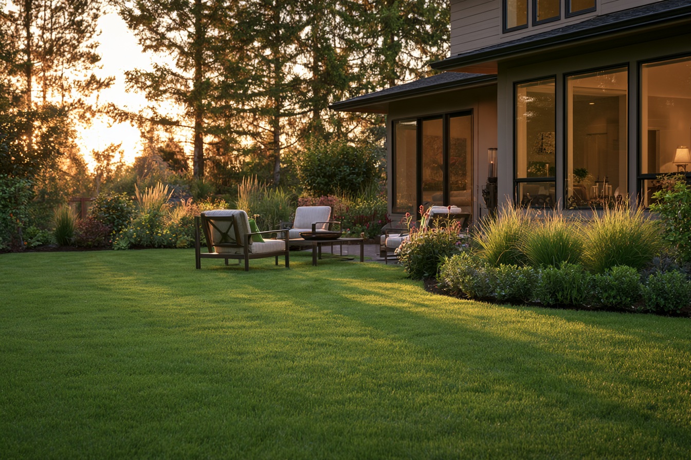

Transforming the Inland Northwest and Arizona
At Latitude Landscaping & Irrigation, we view caring for the earth as a profound honor and stewardship. We believe your outdoor environment is meant to be a place of rest and beauty. Whether you dream of a vibrant new outdoor living space or need smart solutions for weed control and dog-friendly yards, our mission is to partner with you to bring your vision to life while minimizing the labor required to maintain it.
Founded by a military veteran, our company operates on the core principles of dedication, discipline, and total integrity. As a Christian-owned business, we believe the best way to honor God is through exceptional service. We proudly welcome clients from all backgrounds, treating every property with the utmost reverence and care, as if it were Christ’s.